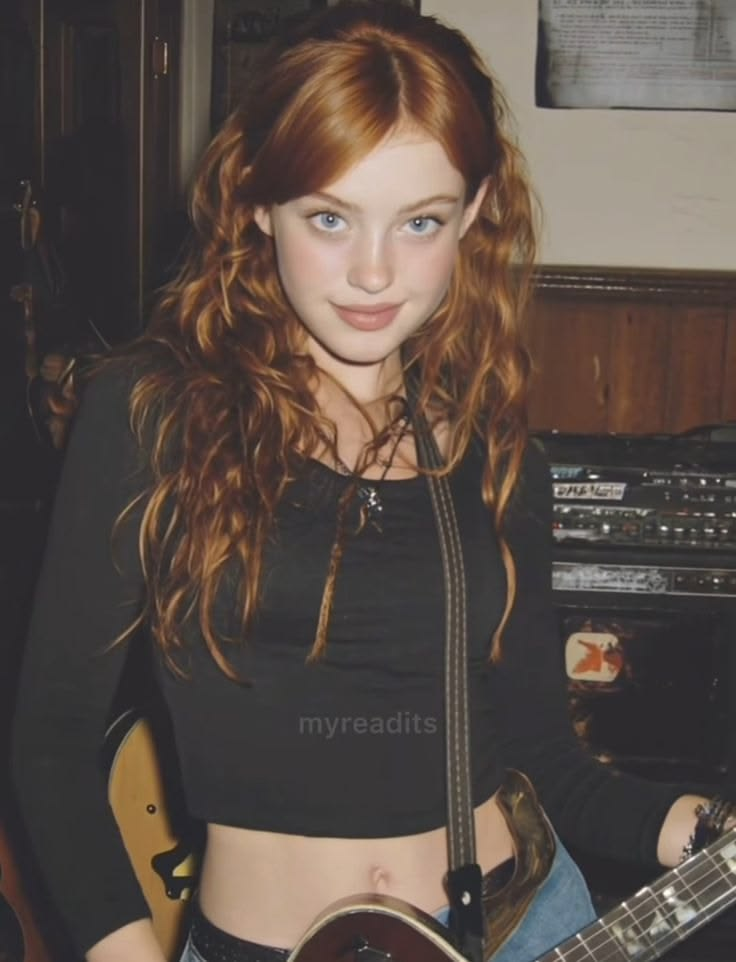

★ LOJA DE DISCOS • GUITARRISTA • CAOS ★
KYLIE LETTERSON
Vendedora de uma loja de discos durante o dia. Guitarrista nas horas vagas. Uma pequena ameaça à segurança pública o resto do tempo.
CONHECER A KYLIE ↓
01
QUEM É ELA?
IDADE
19 anos
ALTURA
1,80m
PROFISSÃO
Vendedora de Loja de Discos
SEGUNDA VIDA
Guitarrista nas horas vagas
RUIVA.
BARULHENTA.
IMPREVISÍVEL.
Kylie tem uma aparência marcante e delicada. Seu cabelo longo, volumoso e ondulado possui um tom ruivo acobreado vibrante, impossível de ignorar.
Seus olhos azul-acinzentados contrastam com seus cabelos, enquanto sua postura relaxada demonstra uma confiança natural.
02
LINHA DO TEMPO
O COMEÇO DE TUDO
Nasceu no dia 18 de julho de 1962 em Howell - Michigan - EUA, às 23:58, numa quinta-feira que tava chovendo pra carai.
Nascimento
O início da história da Kylie.
Caiu na porrada com coleguinha
Kylie caiu na porrada com a coleguinha Júlia. (6 Anos)
O nariz de Júlia
Quebrou o nariz da coleguinha com uma pedrada. Júlia. (10 Anos)
A primeira guitarra
Ganhou sua primeira guitarra. (14 Anos)
Uma Kombi muito foda
Comprou uma Kombi muito foda. (16 Anos)
A revanche
Especificamente às 00hrs, ou seja, do dia 17 pro dia 18, comeu a mesma amiguinha que ela quebrou o nariz. Júlia. (17 Anos)
Formatura
Formatura muito braba do ensino médio, onde ela encheu a cara escondida e a Sophie encobriu ela.
Primeiro emprego
Arranjou um emprego e lançou uma música com a Júlia.
Michigan State University
Conseguiu uma vaga na Michigan State University para cursar Bacharelado em Música (Performance Musical).
Preparativos
Preparativos pra festa de aniversario que ela vai dar.
03
STATUS DA ROCKSTAR
04
PERSONALIDADE & CAOS
DESCONTRAÍDA
Kylie dificilmente parece realmente preocupada. Mesmo quando deveria.
CARISMÁTICA
Difícil não gostar dela.
BRINCALHONA
Provavelmente vai fazer uma piada no pior momento possível.
MEIO PIROMANÍACA
Não pergunte. Não incentive. Principalmente não dê um isqueiro.
AMOROSA
Por trás de toda a bagunça, Kylie é extremamente carinhosa com quem realmente importa.
05
PLAYLIST DA KYLIE
AC/DC
Highway to Hell
GUNS N' ROSES
Sweet Child O'Mine
QUEEN
"We Will Rock You
IRON MAIDEN
Running Free
BLACK SABBATH
War Pigs
⚡ CURTE
Rock • Música • Mulheres • Guitarras • Filmes de Terror
✖ PASSA LONGE
Música Pop • Burgueses Safados • Homens
IT'S A LONG WAY
TO THE TOP.
Se você quer rock and roll.